先来科普一些基础知识
首先声明，本文是写给完全不懂电脑知识的小白科普的文章，如果你对相关知识非常了解，完全可以跳过本文，购买域名之后自己去折腾。
域名，相当于就是门牌号，你要访问一个网站必须知道它的“门牌号”。
有了门牌号，你得有个存放你网站的地方，然后将门牌号和这个存放地方对应起来，一个网站就可以访问了。
那么，网站放哪里呢？如果你有一台自己的服务器，那当然是放到服务器上，但是对于一个普通人而言一般是不可能的，还好，市面上有很多免费存放代码的地方！http://github.com 就是这其中最好最方便的。
免费赠送配置好的github账号
由于注册账号之后还需要配置很多一些复杂的东西，对于普通人来说可能很麻烦而且很容易出错。如果你懒，你完全可以在购买域名后联系我，我可以把我现在已经注册并配置好的github账号和密码免费赠送给你，你拿到这个账号和密码到这里登录：https://github.com/login
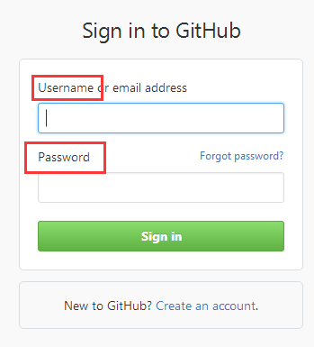
登录之后修改里面的index.html就可以了。
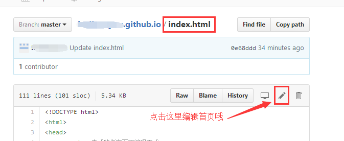
当然，如果你不放心，想自己注册一个账号来玩，没关系，我这里也写了超级详细的教程，一步步按照我这个教程来就是了。
注册账号
不想自己注册账号，想要我赠送账号的可以跳过本小结往后看配置域名解析。
访问 http://github.com ，注册一个账号，假设我的账号叫 test：
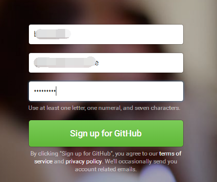
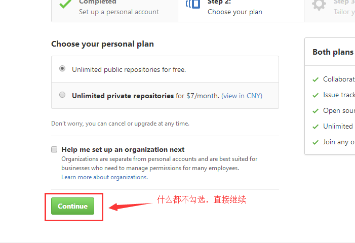
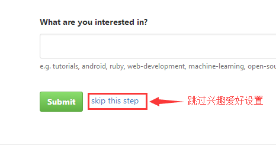
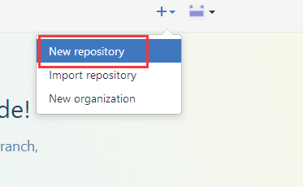
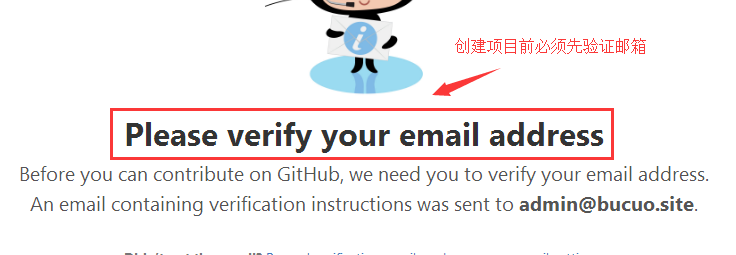
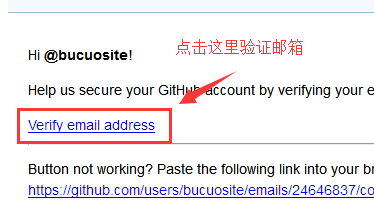
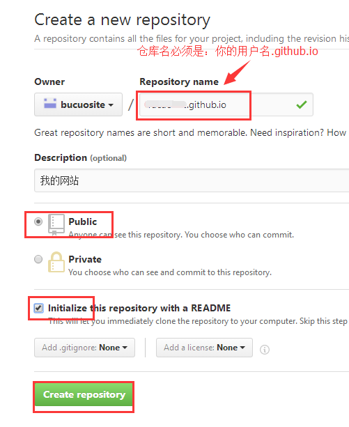
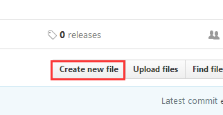
新建一个index.html页面，先随便填点内容，后续你要修改你的网站首页就修改这个页面就可以了。
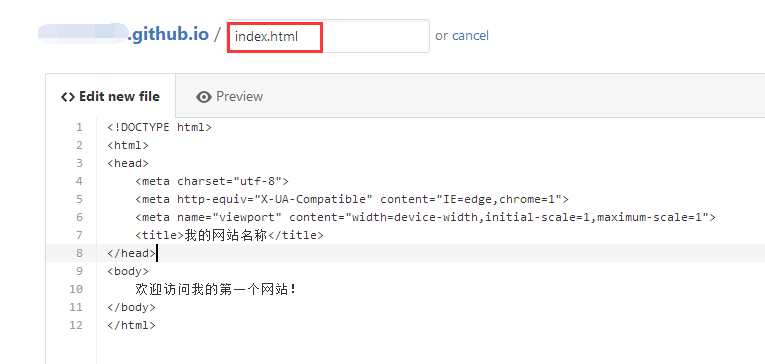
至此，访问 http://test.github.io 就可以看到刚才创建的页面。
配置域名
配置DNS解析
正常情况下这个我已经配置好了，但是域名转让之后这个配置会失效，需要你自己重新配置。
首先要知道网站IP，ping一下你的域名得到IPping 你的用户名.github.io（这里的用户名就是我赠送给你的或者你自己注册的那个英文名），记录下这个IP后面会用到：
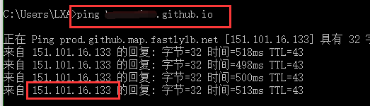
然后登录你的域名后台：http://home.console.aliyun.com
进入云解析DNS，找到你的域名：
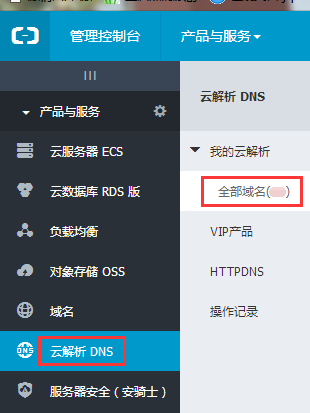
然后点击解析，高级设置，添加解析：
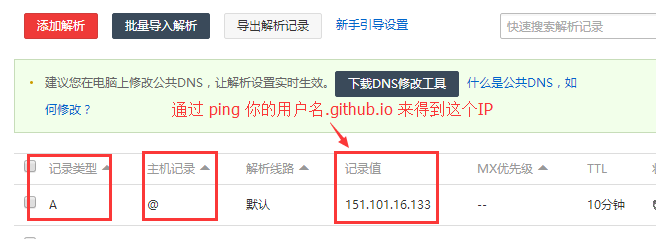
如果你是采用我赠送账号的话，到此你的域名应该已经配置好了，可以直接访问了，如果是自己注册账号呢，则还要继续后面的CNAME配置。
配置CNAME
完成后再回到github.com，新建一个名为CNAME的文件（如果已经有了就编辑），里面内容就填写你的域名：
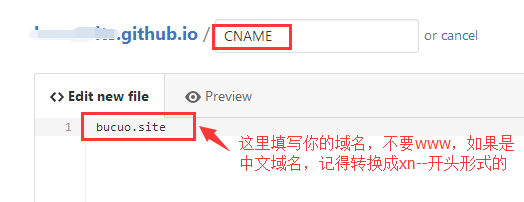
如果你的域名是中文的，比如“黄婷婷.我爱你”，需要先转换一下，可以访问 这里进行转码：
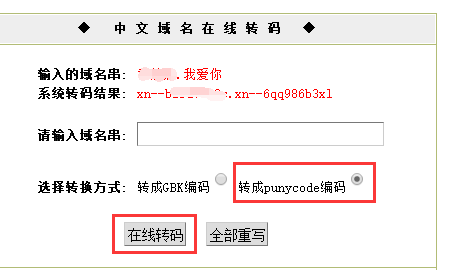
转码结果类似这样的：xn—b2sa7653c.xn—6qq986b3xl
将这个填入CNAME文件中即可，一定要记得提交并保存哦！
验证是否成功
至此，不出问题应该就成功了，访问你的域名试试看有没有问题？如果有问题可能会有一两分钟的延迟。
我不会写网页怎么办
别急，要做出高大上的页面，不一定非要会写代码才行，现在有很多免费的页面生成工具，你直接用它们生成好然后把代码复制到github就可以了。
比如百度推出的H5在线制作工具：
你只要选择一个好看的模板然后拖拖拽拽换图片换文字就可以了。
或者你可以使用 Dreamweaver 来制作网页，也是拖拽几下就可以的，Dreamweaver下载地址：
http://www.downza.cn/soft/12056.html
如果还有问题，必要的时候可以联系我QQ：252382076 ，我可以提供一些必要的协助。